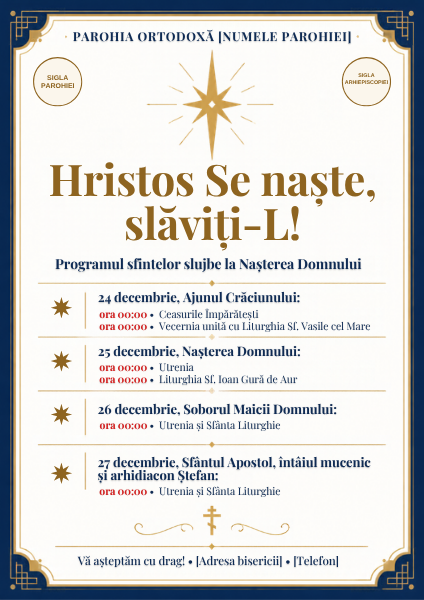
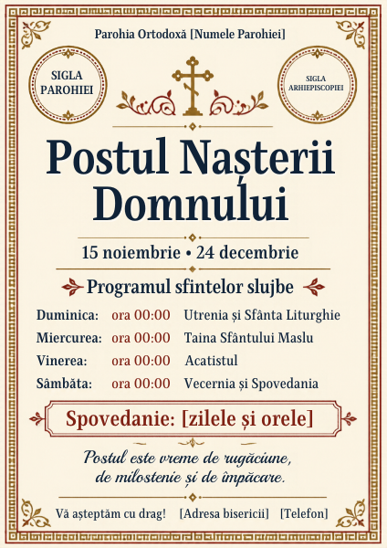

Beautiful, simple templates for Orthodox parishes
Șabloane frumoase și simple pentru parohiile ortodoxe
Plantillas bellas y sencillas para parroquias ortodoxas
Service schedules, feast-day posters, carolers' diplomas and social media posts. Byzantine in spirit, liturgically accurate, editable for free in Canva in two minutes.
Programul slujbelor, afișe de praznic, diplome pentru colindători și postări pentru rețele. În duh bizantin, corecte liturgic, editabile gratuit în Canva în două minute.
Horarios de oficios, carteles para las fiestas, diplomas para los grupos de villancicos y publicaciones para redes sociales. De espíritu bizantino, litúrgicamente correctas, editables gratis en Canva en dos minutos.
See the templates Vezi șabloanele Ver las plantillasDespre acest proiect
About this project
Sobre este proyecto
Candela Parohiei este un proiect independent. Nu ține de nicio eparhie, parohie sau instituție bisericească și nu vorbește în numele lor. Suntem creștini ortodocși și ne dorim ca, prin aceste mijloace simple, cuvântul lui Dumnezeu să fie ziditor în inimile copiilor și în parohiile la care ajung materialele noastre.
Candela Parohiei is an independent project. It does not belong to any diocese, parish or church institution and does not speak on their behalf. We are Orthodox Christians, and our hope is that, through these simple means, the word of God may build up the hearts of children and the parishes our materials reach.
Candela Parohiei es un proyecto independiente. No pertenece a ninguna diócesis, parroquia o institución eclesiástica y no habla en su nombre. Somos cristianos ortodoxos y deseamos que, por estos medios sencillos, la palabra de Dios edifique los corazones de los niños y las parroquias a las que llegan nuestros materiales.
Fiecare text e verificat înainte să ajungă la dumneavoastră: versetele, cuvânt cu cuvânt, pe Biblia ortodoxă; rugăciunile, după Ceaslov; citirile zilei, după calendarul Bisericii. Nu folosim chipuri de sfinți desenate sau generate de calculator; icoanele care apar sunt icoane vechi, în domeniul public.
Every text is checked before it reaches you: Bible verses word by word, prayers against the Horologion, daily readings against the Church calendar. We never use drawn or computer-generated faces of saints; the icons you see are historic icons in the public domain.
Cada texto se revisa antes de llegar a usted: los versículos, palabra por palabra; las oraciones, según el Horologion; las lecturas del día, según el calendario de la Iglesia. No usamos rostros de santos dibujados ni generados por ordenador; los iconos que aparecen son iconos antiguos de dominio público.

Nativity service schedule
Programul slujbelor de Crăciun
Horario de la Natividad
Christmas Eve to St Stephen, with spaces for your parish logo and your diocese's emblem.
De la Ajun până la Sfântul Ștefan, cu loc pentru sigla parohiei și a arhiepiscopiei.
De la Nochebuena a San Esteban, con espacio para el logo de la parroquia y el escudo de la diócesis.

Nativity Fast
Postul Nașterii Domnului
Ayuno de la Natividad
Weekly services, confession times and a gentle word about the fast.
Slujbele din săptămână, Spovedania și un cuvânt despre post.
Oficios de la semana, horario de confesiones y una palabra sobre el ayuno.
In your parish's language
În limba parohiei dumneavoastră
En la lengua de su parroquia
- English
- Română
- Italiano
- Español
- Français
- Deutsch
Bilingual editions for Romanian parishes in the UK, Italy, Spain, France and Germany. New and Old Calendar versions.
Ediții bilingve pentru parohiile românești din Marea Britanie, Italia, Spania, Franța și Germania. Variante pe stil nou și pe stil vechi.
Ediciones bilingües para las parroquias rumanas del Reino Unido, Italia, España, Francia y Alemania. Versiones para el calendario nuevo y el antiguo.
Why Candela Parohiei
De ce Candela Parohiei
Por qué Candela Parohiei
Liturgically checkedEvery service name and feast title is verified against the liturgical books.
Verificate liturgicFiecare slujbă și titulatură e verificată după cărțile de cult.
Revisadas litúrgicamenteCada oficio y cada título de fiesta se comprueba con los libros litúrgicos.
Byzantine, not commercialStars, crosses and meanders. No snowflakes, no reindeer.
Bizantine, nu comercialeStele, cruci și meandre. Fără fulgi și fără reni.
Bizantinas, no comercialesEstrellas, cruces y meandros. Sin copos de nieve ni renos.
Readable from the church doorHigh contrast, large type, tested on phones.
Lizibile de la ușa bisericiiContrast mare, litere mari, verificate pe telefon.
Legibles desde la puerta de la iglesiaAlto contraste, letra grande, probadas en el móvil.
Free Canva account is enoughChange the name, times and address in minutes.
Ajunge contul gratuit de CanvaSchimbați numele, orele și adresa în câteva minute.
Basta una cuenta gratuita de CanvaCambie el nombre, los horarios y la dirección en minutos.
Order or request a template
Comandă sau cere un șablon
Pedido o plantilla a medida
Need your parish's own schedule, another language or a template for a different feast? Write to us.Aveți nevoie de programul parohiei dumneavoastră, de altă limbă sau de un șablon pentru alt praznic? Scrieți-ne.¿Necesita el horario de su parroquia, otro idioma o una plantilla para otra fiesta? Escríbanos.